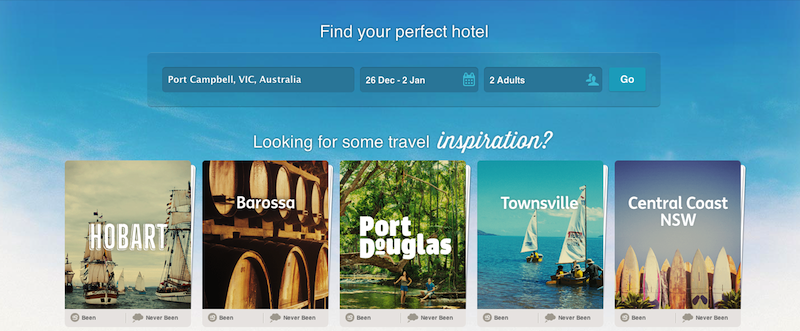

Operations at Hooroo
Feel free to ask any questions at any time
| z, ? | toggle help (this) |
| space, → | next slide |
| shift-space, ← | previous slide |
| d | toggle debug mode |
| ## <ret> | go to slide # |
| c, t | table of contents (vi) |
| f | toggle footer |
| r | reload slides |
| n | toggle notes |
| p | run preshow |
| P | toggle pause |
Operations at Hooroo
Feel free to ask any questions at any time
Operations at Hooroo
Operations at Hooroo
Operations at Hooroo
urbandictionary.com/define.php?term=hooroo
An Aussie way of saying "goodbye"
Bruce:
Crikes it's getting late, mate, I should probably get back.
Shaz:
No worries mate, see you for the shearing competition tomorrow. Hooroo.
Bruce:
Hooroo!
Operations at Hooroo

Operations at Hooroo


Operations at Hooroo
Using Zeus lately, speeds up the use of Rails console, faster testing response, etc


Operations at Hooroo
Jenkins starts prepare job which runs 'fast' unit tests, finishes with close job which will create a deployment candidate
Operations at Hooroo
We have a physical deploy button using an Arduino in the works
Operations at Hooroo
Jenkins detects chef related changes, kicks off a dedicated Chef pipeline build
Operations at Hooroo
The USR2 signal causes Unicorn to create a new master process, whilst keeping the previous master running serving the old app. If the new Unicorn master process starts up successfully then the old master process is killed. In the event the new Unicorn master process cannot start up properly, the old Unicorn master process continues serving clients.
Operations at Hooroo
We wanted to fallback to the traditional synchronous method in the event of an error, so took advantage of the .async method accepting a block and providing custom functionality
Operations at Hooroo
Airbrake.configure do |config|
config.api_key = 12345678
config.async do |notice|
begin
Resque.enqueue(AirbrakeDeliveryWorker, notice.to_xml)
rescue
# job submission failed, so go the slower route.
Airbrake.sender.send_to_airbrake(notice)
end
end
endOperations at Hooroo
Every Thursday we spend the afternoon trying out new tech, experimenting with new ideas / concepts.
Operations at Hooroo
Using RSpec to test our infrastructure seemed logical, leverage team knowledge
Operations at Hooroo
# nginx
#
shared_examples "an nginx setup" do
it { host.should have_remote_file '/etc/nginx/nginx.conf' }
it { host.should listen_on_local_port 81 }
end
# postgres
#
shared_examples "a postgresql setup" do
it { host.should have_remote_file '/var/run/postgres.pid' }
it { host.should listen_on_local_port 5432 }
endOperations at Hooroo
shared_context "Environment" do
describe do
[ :app_master, :app_slaves ].each do |role|
describe role do
Nagios::HostManager.hostnames(environment, role).each do |hostname|
describe hostname do
it_behaves_like "an nginx setup"
it_behaves_like "a haproxy setup"
end
end
end
end
end
endOperations at Hooroo
describe 'Shrubbery', :environment => :shrubbery do
include_context "Environment"
end
describe 'Staging', :environment => :staging do
include_context "Environment"
endOperations at Hooroo
Operations at Hooroo
We're hiring too :)